Introduction
Deadeye is a vision system for FIRST® Robotics Competition robots designed to be run on a vision coprocessor, such as the Jetson Nano Developer Kit. It consists of several parts:
- Vision Daemon - C++ vision capture and processing pipeline.
- Client Library - Java library for use with FRC robots and other clients
- Admin Web UI - React web interface to manage Deadeye vision system.
- Admin Server and Tools - Python web service to connect admin web UI to vision daemon back-end.
- Provisioning Tools - Ansible playbooks for provisioning and deploying the system to vision coprocessors.
Contributing
Deadeye is free and open source. You can find the source code on GitHub and issues and feature requests can be posted on the GitHub issue tracker. Deadeye relies on our users to fix bugs and add features: if you’d like to contribute, please consider opening a pull request.
Quickstart
This section gets you started using Deadeye with a FRC robot program. It will work on either a robot or the robot simulator available on your development workstation.
In this example, we'll upload this target test image to Deadeye. To make things interesting, this image includes extra retro-reflective tape reflections (“noise”) that will need to be filtered out to isolate the target correctly.
{kind=link}
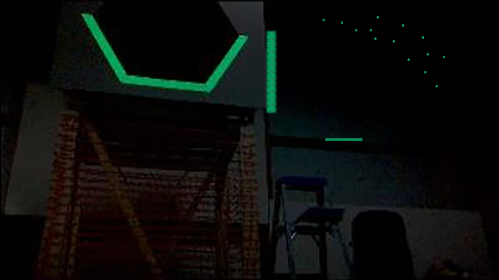
Configure Pipeline
Configure Vision Pipeline
This example assumes you have a Deadeye unit configured with the
UprightRectPipeline and you can access its admin dashboard from your browser.
Note: The quickstart pipeline tuning process outline below is good enough for our single target test image. Real-world usage requires more careful tuning that takes into account varying field positions and lighting conditions.
Image Capture
Start by using Capture ➔ Type ➔ Image Upload dashboard option to upload a test image of a target.
{kind=link}
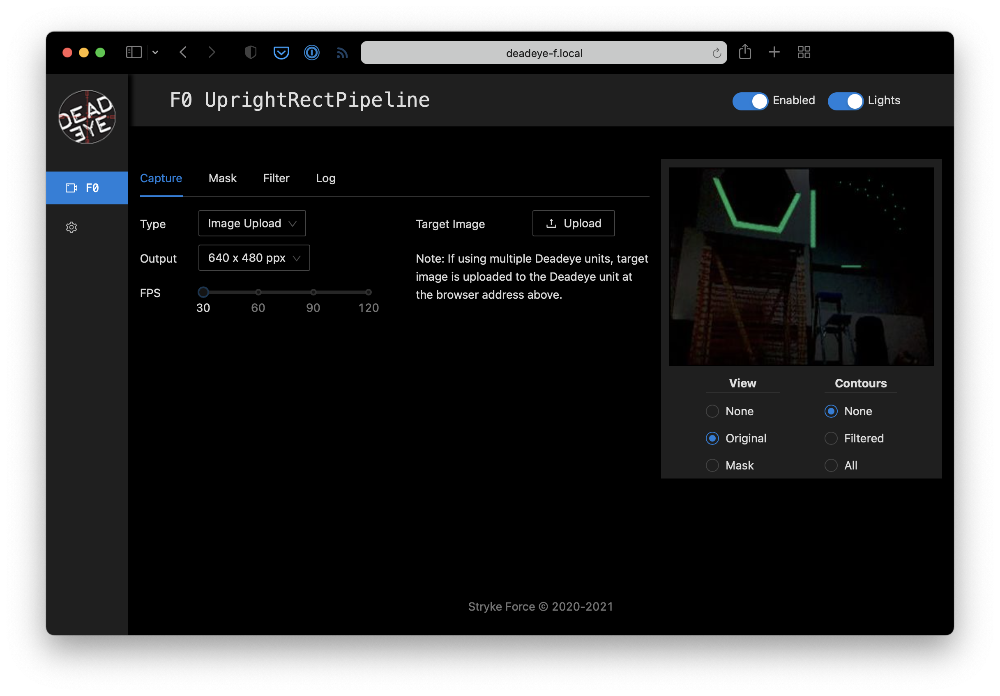
Mask Target
Aquire contours that surround target reflections by adjusting the pipeline mask parameters.
Note: You can make the hue, saturation, and value adjustments in any order, but we usually adjust value last and keep as wide a value range as possible to account for different target viewing distances.
Since the reflected light from the retro-reflective tape is a saturated color we start by adjusting the Mask ➔ Saturation lower bound. While watching the preview, increase the lower bound to a value that starts to remove low-saturation pixels but retains all the target pixels that we are interested in.
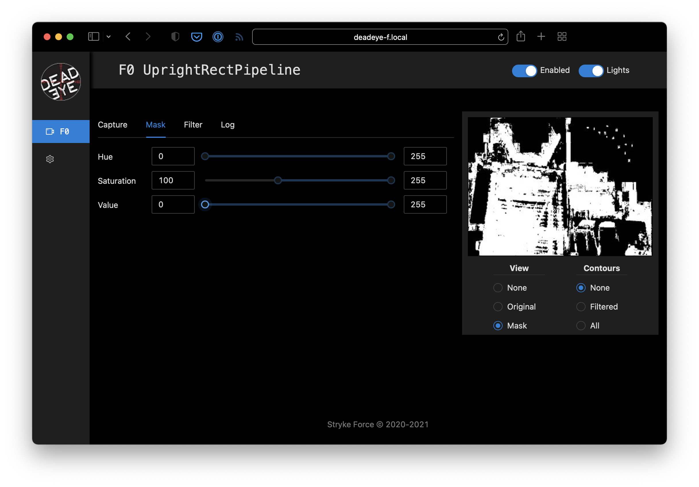
We use a specific green-colored light to illuminate the target so we can filter out other colors by adjusting the Mask ➔ Hue lower and upper bounds until just before the target pixels start to disappear.
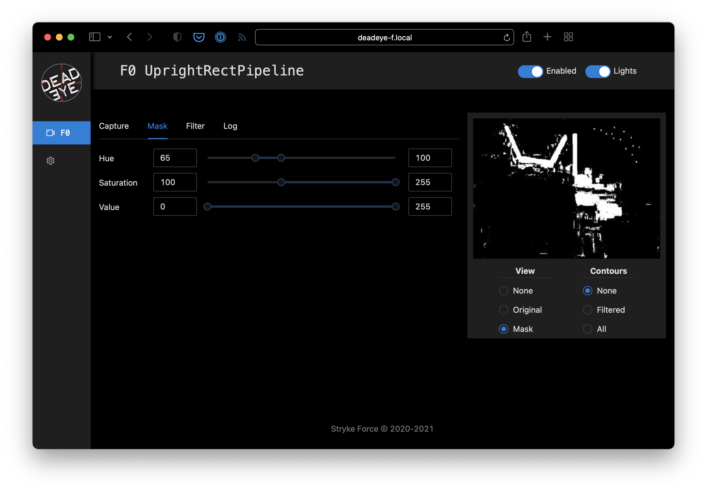
Finally, since the retro-reflective target tape creates a bright reflection, we adjust the Mask ➔ Value lower-bound to remove dim pixels and clean up the reflected target mask.
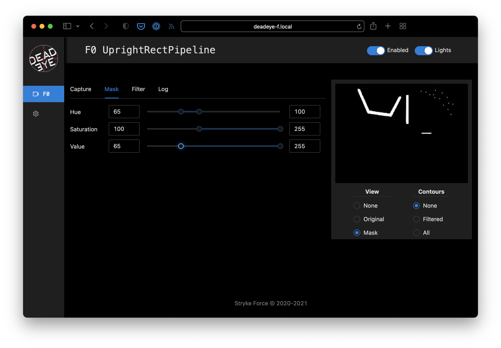
Filter Contours
Our masked test target image contains spurious contours that need to be filtered out. Set Preview ➔ Contours ➔ Filtered and adjust the filters until you just have a single contour around the target left.
Note: When tuning filters for an actual robot, some of the filter parameters may be affected by camera viewing angle and distance as the robot moves around the field. Be sure to test thoroughly!
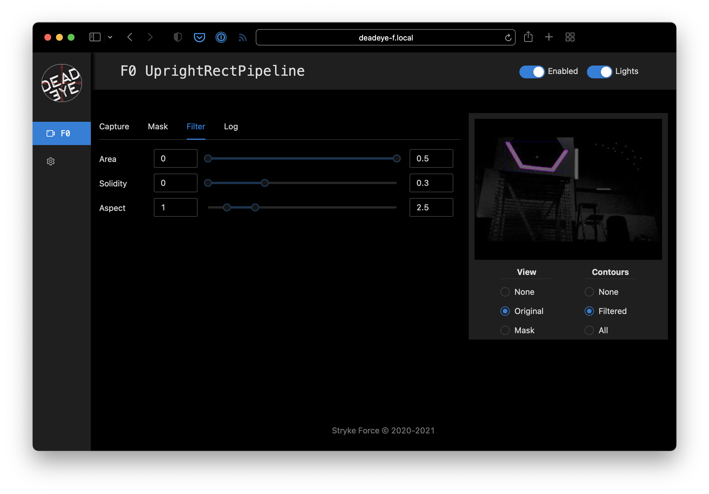
The following adjustments can be made to filter contours.
- Area: The ratio of the contour area to the total image area.
- Solidity: The ratio of the contour area to the convex shape that covers the entire contour.
- Aspect: The ratio of width to height of the bounding box for the contour.
Pipeline Logging
Logging can be enabled in the dashboard to assist troubleshooting during competitions. Here’s an example of logging output from the pipeline we just configured.
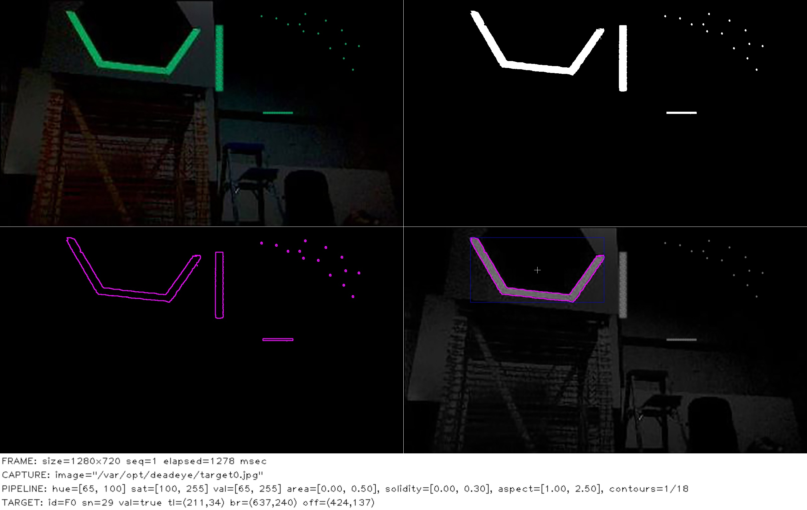
Create Robot Project
Deadeye provides a Java client library (javadocs) that can be used in FRC robot programs to control and receive data from a Deadeye vision co-processor. In this example, we’ll use this library to connect to the Deadeye pipeline we just configured and print out data about the sample image's target.
Create Project
We’ll assume you are using VS Code with the WPILib extension.
See the WPILib VS Code instructions for creating a robot program and use the following settings for the New Project Creator:
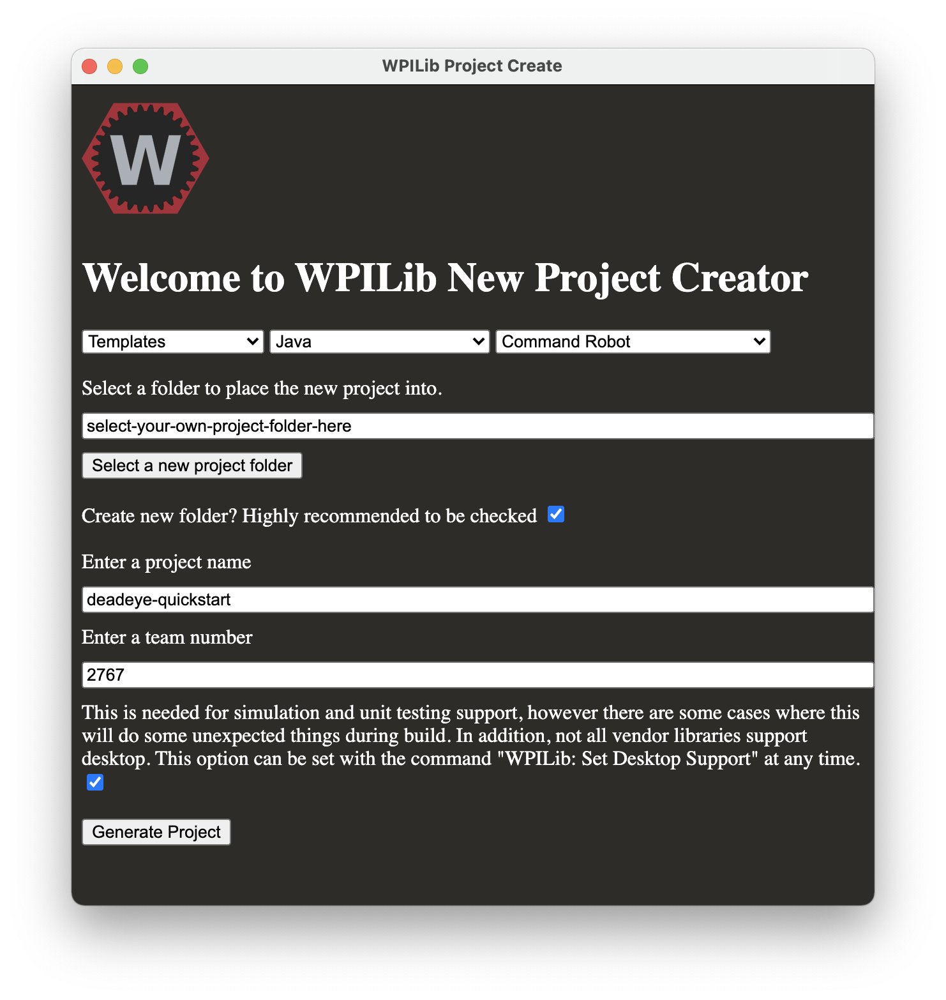
Add Deadeye Library
For FRC robot projects, the Java client library is provided via a vendordeps file:
Download from: http://maven.strykeforce.org/deadeye.json
To install, use VS Code ➔ Install new libraries (online) and provide the
deadeye.json URL above.
Alternatively, you can install manually to your project vendordeps directory or run the following Gradle task in your project directory to download and install the Deadeye vendor dependency file:
$ ./gradlew vendordep --url=http://maven.strykeforce.org/deadeye.json
Robot Example
We can now program our robot to access the Deadeye vision pipeline we just
configured above. Since the example above is a UprightRectPipeline for
Deadeye camera F0 (seen at top of admin dashboard page), we’ll use this
information when programming our robot below.
Deadeye Camera Class
The recommended way to use the Deadeye client library is to create a class that
represents each Deadeye camera, DeadeyeF0 in our case.
Pipelines are designed to be used with their corresponding TargetData type,
so our deadeye::UprightRectPipeline uses a UprightRectTargetData:
Create src/main/java/frc/robot/subsystems/DeadeyeF0.java (replace F0 with
the camera you are actually using):
public class DeadeyeF0 implements TargetDataListener<UprightRectTargetData> {
private final Deadeye<UprightRectTargetData> deadeye;
public DeadeyeF0() { // (1)
deadeye = new Deadeye<>("F0", UprightRectTargetData.class);
deadeye.setTargetDataListener(this);
}
public DeadeyeF0(NetworkTableInstance nti) { // (2)
deadeye = new Deadeye<>("F0", UprightRectTargetData.class, nti);
deadeye.setTargetDataListener(this);
}
public void setEnabled(boolean enabled) { // (3)
deadeye.setEnabled(enabled);
}
@Override // (4)
public void onTargetData(UprightRectTargetData data) {
Point center = data.center;
System.out.printf("x=%d, y=%d %n", center.x, center.y);
}
}
(1) Create a new Deadeye object instance that will expect
UprightRectTargetData from camera F0 and that uses the default
NetworkTablesInstance. Register this object as the designated
TargetDataListener for camera F0.
(2) Alternate constructor you may use if you are not using the default
NetworkTablesInstance. Normally this is only needed when you are using a
Deadeye or robot simulator and you are using a separate stand-alone
NetworkTablesInstance for Deadeye. This repo contains an example of how to
use.
(3) Enabled or disable camera F0 pipeline. When enabled, the camera
lights will turn on and the pipeline will send target data.
(4) Implements TargetDataListener.onTargetData() and is called for every
camera frame processed through F0 pipeline. This example implementation
extracts the target center point and prints it.
Robot Class
Normally you would integrate the camera DeadeyeF0 class above into a robot
Subsystem and activate from a Command but we'll keep it simple for the
purposes of this example.
Make the following additions to the standard Robot class in
src/main/java/frc/robot/Robot.java.
Initialize our robot’s DeadeyeF0 object in the robotInit() method.
private DeadeyeF0 deadeyeF0;
@Override
public void robotInit() {
// ...
deadeyeF0 = new DeadeyeF0();
}
Enable camera F0 when enabling the robot in tele-operation mode.
@Override
public void teleopInit() {
// ...
deadeyeF0.setEnabled(true);
}
And disable the camera when disabling the robot.
@Override
public void disabledInit() {
deadeyeF0.setEnabled(false);
}
Deploy and Run
If your pipeline is tuned as above you should see target data for the sample image large target in the robot log when you enable the robot:
x=212, y=91
x=212, y=91
Configuration
Deadeye pipelines are configured at build time by configuring CMake when
building directly during development or by editing inventory.yaml when
deploying with Ansible.
Deadeye Pipelines
Deadeye has several general-purpose pipelines available that cover a majority of use cases.
UprightRectPipelineMinAreaRectPipelineTargetListPipeline
Deadeye servers have a configuration file at /etc/opt/deadeye/deadeye.conf
Deadeye vision server pipelines are configured by pointing your browser
to http://<address of Deadeye unit>/.
Architecture
Deadeye consists of software and hardware that together provide a vision processing system for FRC robots. The main system components are identified in the block diagram below. In addition to the main vision processing pipeline shown in red, we have an adminstration dashboard in blue, and miscellaneous services in yellow.
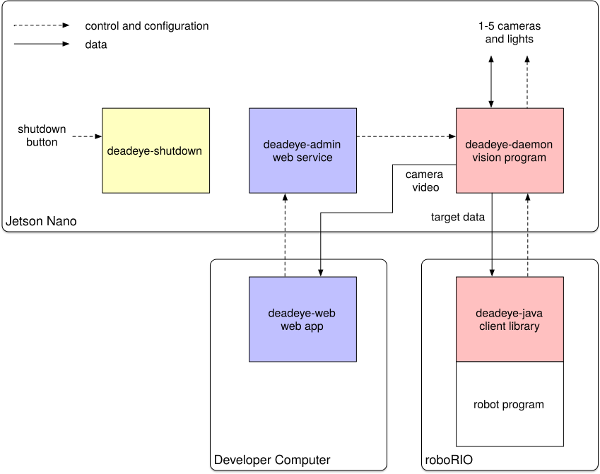
Although typically used on a Jetson Nano Developer Kit, the Deadeye server software (vision process daemon and admin dashboard web server) can be installed on any Linux system with the appropriate C++ compiler and development libararies installed.
Software
The Deadeye system has several components that run on a vision coprocessor, client roboRIO and web browser. They communicate over the network and require a running NetworkTables server.
Camera Pipeline Daemon
The main vision processing process running on the vision coprocessor that manages up to five cameras and associated target processing pipelines. Each running instance is identified by a unit ID: A, B, C…
Communication is via NetworkTables for configuration and control via the web admin dashboard server and the Java client library and via UDP for streaming targeting data to the Java client library. It also provides an on-demand camera video stream directly to the web admin dashboard client over TCP.
It runs as a systemd service named deadeye-daemon.service.
Java Client Library
A Java client libary (javadocs) used by FRC roboRIO robot code to control and communicate with the camera pipeline daemon running on the vision co-processor. Communication to other components is via NetworkTables for configuration and control and to the camera pipeline daemon directly via UDP for streaming target data.
See the Quickstart for installation and usage instructions.
Web Admin Dashboard Server
A Python web service running on the Nano that is the backend for the web admin dashboard client, that configures and controls the camera pipeline daemon.
Communication with the camera pipeline daemon is via NetworkTables and with the web admin dashboard client via a websocket using the Socket.IO protocol.
It runs as a systemd service named deadeye-admin.service.
Web Admin Dashboard Client
The web-based adminstration dashboard run on a developer’s computer used to control, configure and monitor the camera pipeline daemon.
It communicates with the web admin dashboard server over websockets and streams camera preview video directly from the camera pipeline daemon over TCP as MJPEG.
It can be loaded by connecting with a web browser to port 5000, for example, http://10.27.67.10:5000/.
Shutdown Service
A background service running on the Nano that watches for a shutdown button press and performs a clean shutdown if it pressed for three or more seconds.
It runs as a systemd service named deadeye-shutdown.service.
Hardware
Deadeye software is designed to interact with cameras, lights and a shutdown switch attached to the Jetson Nano.
Camera
Any camera(s)
supported
by the Nano can be used. Deadeye supports up to five attached cameras per unit.
Our default camera is a Raspberry Pi Camera Module
V2 connected to the
J13 camera connector.
Lights
Our default vision processing pipeline relies on bright green LED illumination reflected by retro-reflective target tape back to the camera.
We drive the green LEDs using a LUXdrive A009-D-V-1000 BuckBlock LED driver module.
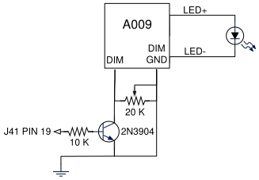
Each camera can have its own light driver circuit and has GPIO output assigned per table below.
| Camera | J41 Pin |
|---|---|
| 0 | 19 |
| 1 | 21 |
| 2 | 23 |
| 3 | 24 |
| 4 | 26 |
Shutdown Switch
The shutdown service daemon checks GPIO pin 7 of the
Nano J41 header every second and will initiate a system shutdown if the input
is pulled high by the shutdown switch for three consecutive seconds.
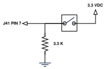
Installation
Warning
This installation method is deprecated in favor of running Deadeye in Docker on vision coprocessors. See Docker installation and usage instructions.
This section describes how to prepare a Jetson Nano for Deadeye deployment. We deploy the base Linux OS, and prepare the system for automated provisioning in the next section.
Tip
This step is only done once for each SD card you prepare.
Jetson Nano Developer Kit
When you boot the first time from a freshly-imaged SD card, the will take you through some initial set-up. Normally this is done with an attached monitor, keyboard and mouse, but for convenience we will perform a “headless” set-up over a USB serial connection.
Items Required
Have the following items available before starting installation.
microSD Card: The uses a microSD card as a boot device and for main storage. It’s important to have a card that’s fast and large enough for your projects; the minimum recommended is a 16GB UHS-1 card.
5V 4A Power Supply: Normally the is powered via the micro-USB connector, however we will be using it for serial communication during set-up. You’ll need to power the with a DC barrel jack power supply (with 5.5mm OD / 2.1mm ID / 9.5mm length, center pin positive) that can supply up to 5V 4A. See Adafruit’s 5V 4A switching power supply.
Circuit Board Jumper Cap: To enable use of the DC barrel jack power supply, you will need to fit a jumper to J48 on the baseboard.
USB Cable: You will use a micro-USB to USB A cable to connect to the Nano. Make sure that the cable is data capable. Some USB cables (such as those that come with phones) only transmit power.
Ethernet Cable: For connecting to your network.
First Boot
Note
Start with the Nano un-powered; we will connect to power supply in a step below.
- Download the Jetson NANO Developer Kit SD Card image and install it to your microSD card using balenaEtcher or equivalent.
- Install the microSD card into the slot on the underside of the module.
- Connect the USB cable between your computer and the Nano micro-USB connector.
- Connect the ethernet cable to your network.
- Attach the circuit board jumper cap across
J48. - Attach the 5v power supply to the
J25power jack to boot the Nano. - When boot is complete, connect to the via USB serial. You will need a
serial terminal application such as
puTTYfor Windows orscreenfor Linux and macOS. More information about connecting with a serial terminal can be found at JetsonHacks.
Initial Set-up
When you boot the first time, the Developer Kit will take you through some initial setup, including:
- Review and accept NVIDIA software EULA
- Select system language, location, and time zone
- System clock set to UTC: Yes
- User full name: Deadeye
- Username: deadeye
- Password: use shop WiFi password
- APP partition size: accept default value to use entire SD card
- Network configuration: select eth0 as the primary network interface. If you are connected to a network via ethernet, you should be assigned an IP address using DHCP. We will configure a static IP address below.
- Select a host name corresponding to the unit ID, for example, unit A is deadeye-a.
- Log back into the as user deadeye and reboot using
sudo reboot
2767 Configuration
For team 2767, computer name and IP address are according to the following table:
| Unit | Hostname | IP Address |
|---|---|---|
| A | deadeye-a | 10.27.67.10 |
| B | deadeye-b | 10.27.67.11 |
| C | deadeye-c | 10.27.67.12 |
| D | deadeye-d | 10.27.67.13 |
The gateway and DNS server are 10.27.67.1 for all units.
Important
Make sure you have rebooted the after performing initial set-up since its network interface will change after first boot.
To finish configuration, log in as user deadeye and run the following
command to install the curl utility:
sudo apt install -y curl
When the curl utility is successfully installed, run our custom bootstrap
script:
curl https://www.strykeforce.org/deadeye/bootstrap.sh | sudo bash
Reboot the using sudo reboot and confirm you can log in remotely from your
computer via SSH: ssh deadeye@10.27.67.12 (deadeye-c).
Miscellaneous
Update installed packages, this may take a while depending on the number of out-of-date packages:
sudo apt upgrade
Deadeye Server Installation
Warning
This installation method is deprecated in favor of running Deadeye in Docker on vision coprocessors. See Docker installation and usage instructions.
We use Ansible to automate the deployment of the Deadeye system and its prerequisite development tools and libraries. Alternatively, you can install each of the Deadeye Server components manually.
While the Deadeye server software can be installed on any Linux system, these Ansible playbooks have only been tested on Ubuntu 18.04 and up.
Prerequisites
Ensure the following prerequisites are satisfied before installing the Deadeye server software. Here, deployment host is the computer you are running Ansible from (i.e. your development laptop).
- Your has a connection to the internet.
- The strykeforce/deadeye repository has been cloned to the deployment host.
- Make sure you've got Python and
pip{.interpreted-text role=“command”}, and both are available from the command line on the deployment host. Help can be found in the pip documentation. - The following build tools are installed on the deployment host:
Server Inventory
The list of configured Deadeye servers is contained in the
deadeye/ansible/inventory.yaml{.interpreted-text role=“file”} file.
This should be edited as needed when configuring new servers.
Server Provisioning
Provisioning installs required development tools and libraries to build and run Deadeye system components on a .
This step is typically only done once for each SD card you prepare. You may decide to re-run provisioning if you change development tools or library versions in Ansible.
We'll assumed Ansible in the strykeforce/deadeye repository is
configured the way we want and provision the desired unit (deadeye-c, in
this example):
cd deadeye/ansible
ansible-playbook -i inventory.yaml provision.yaml -l deadeye-c
Deadeye Software Deployment
This step builds and install or upgrades Deadeye system components (see
sect_intro{.interpreted-text role=“ref”}) on the and is run each time
you wish to update a with the most current version in the
strykeforce/deadeye repository.
To build and deploy Deadeye itself, first edit
inventory.yaml{.interpreted-text role=“file”} in the project
ansible{.interpreted-text role=“file”} subdirectory to configure the
build; most importantly, the pipeline assigned to each camera.
In the example below, deadeye-a is configured with
deadeye::MinAreaRectPipeline for camera A0 and
deadeye::UprightRectPipeline for camera A1.
deadeye:
hosts:
deadeye-a:
ansible_host: deadeye-a
deadeye_unit: A
camera_0_pipeline: deadeye::MinAreaRectPipeline
camera_1_pipeline: deadeye::UprightRectPipeline
To actually start the build and installation, run:
cd deadeye/ansible
ansible-playbook -i inventory.yaml deploy.yaml -l deadeye-c